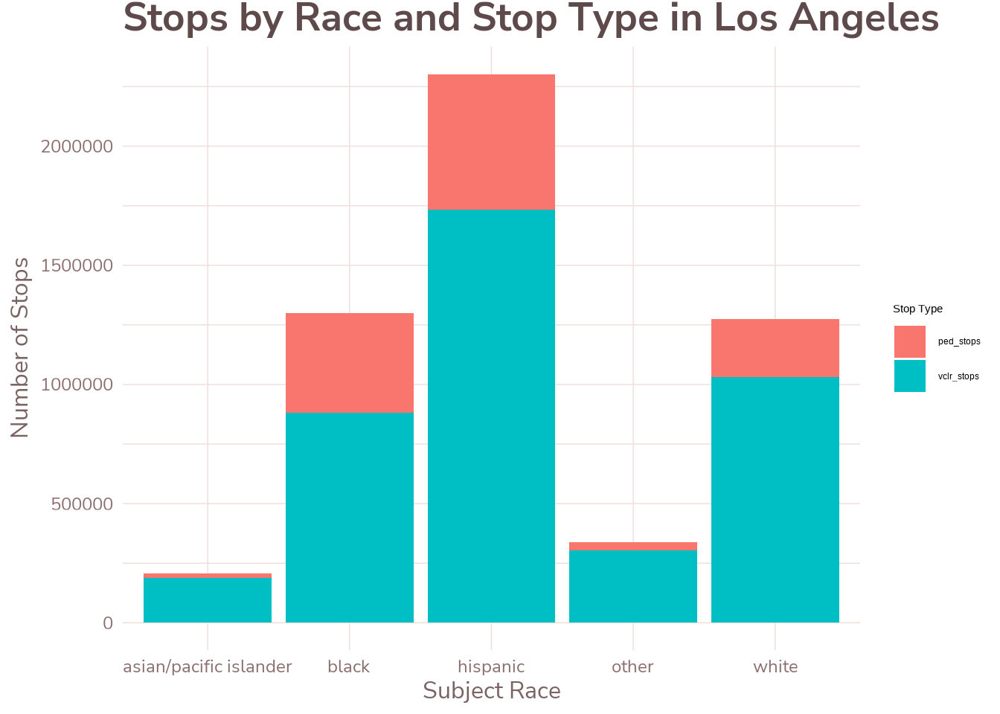
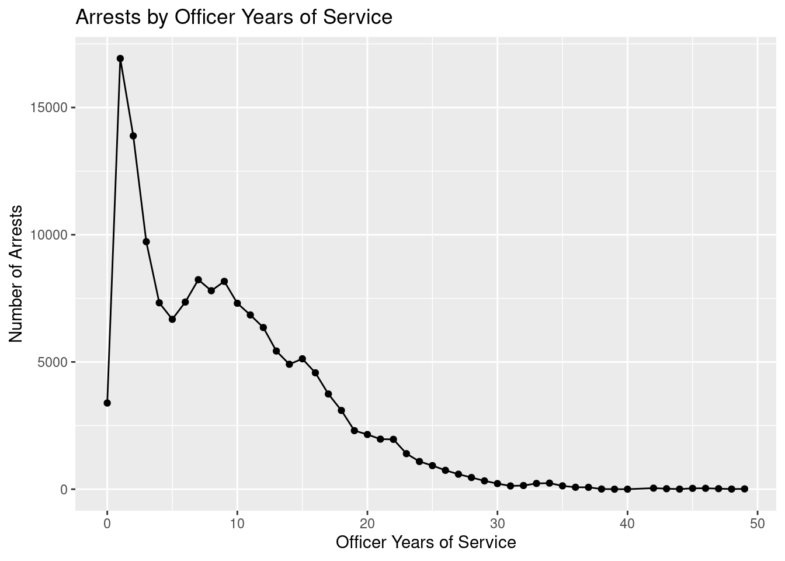

Analysis of Stanford Open Policing Project data tables using SQL.
Author
Anjali Suva
Published
November 30, 2025
For this project, I plan on using the various data sets within the Stanford Open Policing Project to identify any interesting features within traffic stop data for cities within the United States. The data sets used in this assignment all contain standardized stop data from Nashville, Philadelphia, San Francisco, Los Angeles, and Chicago. The reason I chose Nashville, Philadelphia, and San Francisco was because I wanted to perform the same query of taking the average age of the individual subjected to a traffic stop on each of these cities to compare whether or not there was a difference in the results. These cities all have data for the age of the individual subjected to the traffic stop, which some of the other data sets were missing.
I also chose Los Angeles and Chicago as other cities to examine because I wanted to explore data from larger cities. A useful feature of the Los Angeles data set was that the data set noted whether the the traffic stop was a vehicular or pedestrian one. Because of this, I am interested in comparing whether certain racial groups experience pedestrian stops at different rates than vehicular stops in Los Angeles.
The Chicago data set was unique because it had information on the officer’s age, race, sex, and years of service for each traffic stop. Given this information, I wanted to explore the relationship between the number of years of service that an officer had and whether or not they made an arrest at a traffic stop.
To start this project, I established a connection with the SQL database where the different data sets were located and queried the database for the various tables included in the database.
For the first query, I wanted to examine whether there was a difference in the average age of individuals subjected to traffic stops across different racial demographics. The SQL chunk below shows the average age of individuals in Nashville sorted by race.
Show the code
# queryfor average age of individuals in traffic stops by racial groupSELECT subject_race,COUNT(*) AS num_stops, AVG(subject_age) AS avg_ageFROM tn_nashville_2020_04_01GROUPBY subject_raceORDERBY avg_age;
7 records
subject_race
num_stops
avg_age
hispanic
164814
33.1704
other
10397
34.4970
black
1165871
36.1321
NA
1850
36.2800
unknown
36878
36.4913
asian/pacific islander
41668
36.8812
white
1670873
38.1401
From the results of the data, it seems that individuals identified as Hispanic or Other had an average age that was below 35, with Hispanic individuals having the youngest average age. White individuals had the oldest average age, at 38. Although this data raises some questions, the ages are still close enough that concrete conclusions would be hard to draw. Because of this, I chose to run the same SQL chunk with a different city, Philadelphia.
Show the code
# queryfor average age of individuals in traffic stops by racial groupin PhiladelphiaSELECT subject_race, COUNT(*) AS num_stops, AVG(subject_age) AS avg_age FROM pa_philadelphia_2020_04_01 GROUPBY subject_raceORDERBY avg_age;
6 records
subject_race
num_stops
avg_age
hispanic
184184
33.1431
black
1244249
34.5387
unknown
14958
34.7316
white
375862
36.3299
other
5598
36.9376
asian/pacific islander
40245
37.2516
The data for Philadelphia show that Hispanic individuals subject to traffic stops had the youngest average age, similar to the data set for Nashville. However, the racial demographic with the oldest average age was Asian/Pacific Islander rather than White. The mid-30s age ranges within the data table appear very similar to the ones for Nashville.
To determine if there is a consistent pattern of Hispanic individuals having the youngest average age within the data, I decided to run the same chunk with San Francisco.
Show the code
# queryfor average age of individuals in traffic stops by racial groupin San FranciscoSELECT subject_race, COUNT(*) AS num_stops, AVG(subject_age) AS avg_age FROM ca_san_francisco_2020_04_01GROUPBY subject_raceORDERBY avg_age;
5 records
subject_race
num_stops
avg_age
hispanic
116014
34.7626
black
152196
35.9594
other
106858
36.9774
asian/pacific islander
157684
38.9475
white
372318
39.2809
Similar to the previous two data queries, the query for San Francisco shows that Hispanic individuals subject to traffic stops had the youngest average age of all the racial demographics included in the data. The data for San Francisco also show that White individuals had the oldest average age, 39.
Although the pattern is interesting to note, the data by itself cannot be used to conclusively prove differences in law enforcement interactions with individuals of different races. More analysis is required for this conclusion.
I was interested in exploring more patterns related to race in the traffic stop data, so for the next query I wanted to compare whether certain racial groups experience pedestrian stops at different rates than vehicular stops. For this data set, I decided to use Los Angeles because it is one of the most populous cities in the US, and because the data set categorized each stop as vehicular versus pedestrian—a feature that other city data sets did not have. I determined this through the query below, which uses SELECT DISTINCT to return only unique rows for the “Type” column.
#create an R output displaying thenumberof pedestrian stops, vehicle stops, and total stops grouped bythe race ofthe individual stoppedSELECT subject_race,COUNT(*) as num_stops,SUM(type='pedestrian') AS ped_stops,SUM(type='vehicular') AS vclr_stopsFROM ca_los_angeles_2020_04_01GROUPBY subject_raceORDERBY ped_stops, vclr_stops;
Show the code
#view r output from previous chunkstops_by_type
subject_race num_stops ped_stops vclr_stops
1 asian/pacific islander 205561 18026 187535
2 other 337342 33167 304175
3 white 1275788 245705 1030083
4 black 1297885 416681 881203
5 hispanic 2301826 569469 1732357
Show the code
#pivot longer so that type of stop can become a categorical variable (easier for graphing)stops_by_type_adj <- stops_by_type |>pivot_longer(cols =c(ped_stops, vclr_stops), names_to ="stop_type", values_to ="count")#graph tibble in a bar chartggplot(stops_by_type_adj, aes(x = subject_race, y = count, fill = stop_type)) +geom_bar(stat ="identity") +labs(title ="Stops by Race and Stop Type in Los Angeles",x ="Subject Race",y ="Number of Stops",fill ="Stop Type") +theme_asuva()

The data for Los Angeles has some interesting features. One thing that I immediately noticed with the data is that although the number of White individuals who were subject to a vehicular stop is greater than the number of Black individuals (1030083 > 881203), the reverse was true for pedestrian stops. Black individuals experienced more pedestrian stops than White individuals.
Additionally, the proportion of pedestrian stops to vehicular stops also varied quite wildly between racial groups. The Asian/Pacific Islander demographic had the lowest proportion of pedestrian stops, 0.088. This was followed by the Other demographic, with a proportion of 0.098. The proportion of pedestrian stops for White individuals was also noticeably lower, 0.193. However, the proportion for black individuals was 0.321, noticeably higher. For Hispanic individuals, the proportion was 0.247.
These numbers suggest that Black and Hispanic individuals may experience more pedestrian stops compared to other racial groups. This may explain the discrepancy between the pedestrian and vehicular stops for black individuals, since it may be harder for law enforcement to identify an individual’s race while they are driving than when they are walking.
I wanted to continue exploring the data sets, so I decided to examine another populous city, Chicago. While examining the Chicago data set, I realized that the data set had information on the officer’s age, race, sex, and years of service for each traffic stop. With these extra pieces of information, I wanted to explore the relationship between the number of years of service that an officer had and whether or not they made an arrest at a traffic stop.
Show the code
DESCRIBE il_chicago_2023_01_26;
Displaying records 1 - 10
Field
Type
Null
Key
Default
Extra
raw_row_number
text
YES
NA
date
date
YES
NA
time
time
YES
NA
location
text
YES
NA
lat
double
YES
NA
lng
double
YES
NA
geocode_source
text
YES
NA
beat
text
YES
NA
district
text
YES
NA
subject_age
bigint(20)
YES
NA
Show the code
#create an R output displaying numberof arrests byeachyearof service SELECT officer_years_of_service, COUNT(*) AS arrestsFROM il_chicago_2023_01_26WHERE arrest_made =1GROUPBY officer_years_of_serviceORDERBY officer_years_of_service;
Show the code
#disconnect from SQL database DBI::dbDisconnect(con_traffic, shutdown =TRUE)
I used the query above to create an R object with two columns: a column for year of service and a column for the number of arrests made by each officer having that many years of service.
When examining the data in the table, I noticed that there was something strange with some of the entries under the column “officer_years_of_service.” There were about five entries in the column that were above 100 years, which are impossible numbers. In order to graph the data more accurately, I decided to filter those impossible rows before graphing.
Although the table has around 50 rows, several observations can be made just by parsing through the rows. Something of note is that the greatest number of arrests occurred by officers with 1 year of service. After one year, the number of arrests appears to decrease sharply and gradually decrease as the number of years of service increases. In order to see this trend more easily, I decided to graph the table with ggplot as a line graph.
Show the code
#cleaning out illogical rows arrests_by_service_year_clean <- arrests_by_service_year |>filter(officer_years_of_service <100)#plot number of arrests and officer years in a line plotggplot(arrests_by_service_year_clean, aes(x = officer_years_of_service, y = arrests)) +geom_line(color ="mistyrose4") +geom_point(color ="mistyrose4") +labs(title ="Arrests by Officer Years of Service",x ="Officer Years of Service",y ="Number of Arrests") +theme_asuva()

The data in the graph appears to confirm my observations about the table. The peak number of arrests were made by officers with one year of service, and as officers have more years of service, the arrests gradually decline.
This relationship may be due to a variety of factors, all of which cannot be proved by the data set alone but may be worth exploring. For one, there may simply be more junior officers in general, and less officers with greater years of experience. Other reasons may be that younger officers may be more active in patrolling, causing greater numbers of arrests. Older officers may also be more selective about traffic stops or more cautious about entering potentially dangerous situations which may warrant arrests. Although these reasons are speculation, the trend is interesting because it is very pronounced.
In conclusion, the exploration of the data above suggest the existence of racial disparities within policing. While the data tables and graphs above are not enough to conclusively prove the existence of racial bias in policing, there is evidence of differences between racial groups in their interactions with law enforcement.
Credit:
The Stanford Open Policing Project. (2018). Openpolicing.stanford.edu. https://openpolicing.stanford.edu/
Pierson, Emma, Camelia Simoiu, Jan Overgoor, Sam Corbett-Davies, Daniel Jenson, Amy Shoemaker, Vignesh Ramachandran, et al. 2020. “A Large-Scale Analysis of Racial Disparities in Police Stops Across the United States.” Nature Human Behaviour, 1–10.